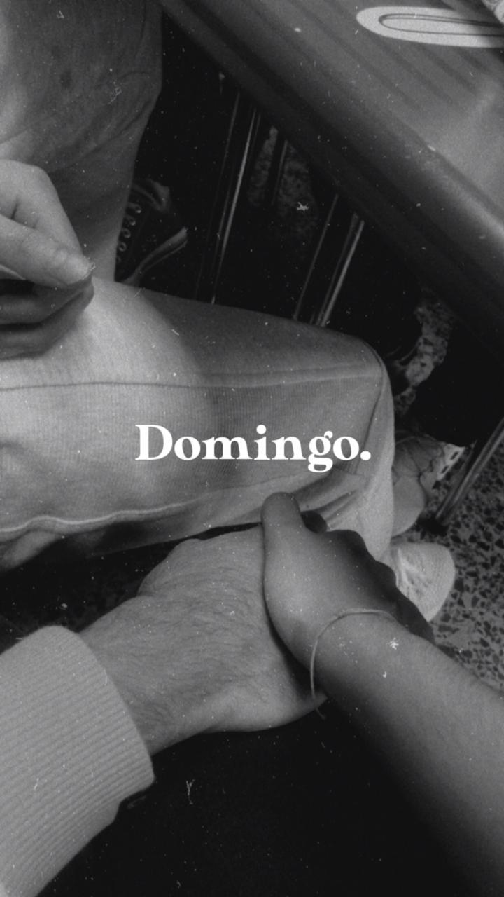
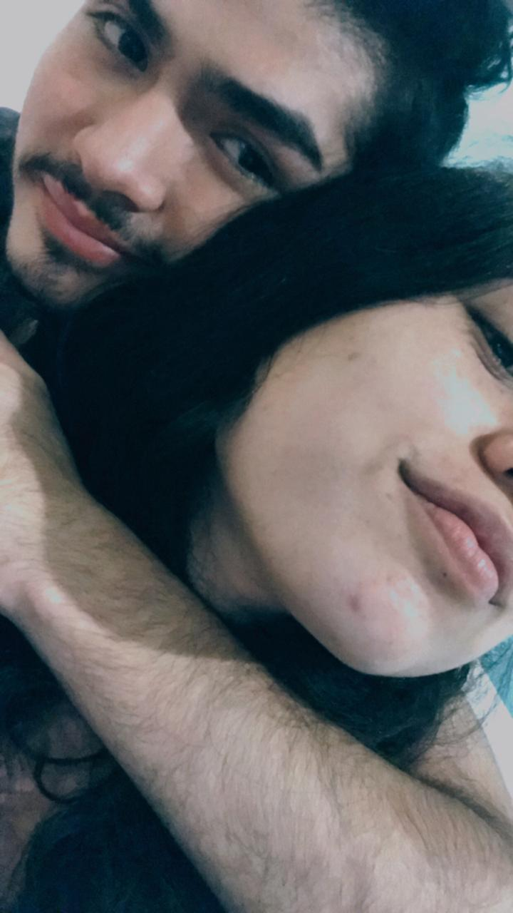

Feliz cumpleaños Paula, amor cuando empezo este año nunca espere conocer a alguien tan maravillosa como tù. (recuerda que este pc es todo inutil y pone las tildes al revès).
Supongo que este es el tipico mensaje que uno manda el dia del cumpleaños de la persona, pero como soy diferente pues te hice esto que es mas como una carta y sabes que me dio mamera poner tildes,
porque esto esta hecho desde un bloc de notas si no sabias y ya te he dicho que soy un inutil escribiendo.
Entonces por donde empezamos. Siempre te he dicho que no soy bueno con estos mensajes asi que estoy haciendo mi ayor esfuerzo. La verdad no recuerdo el dia que nos conocimos, pero si mal no recuerdo eso fue a mitades de junio, pero que buen momento para conocernos,
aun me acuerdo de ese momento donde tu linea de entrada fue preguntarme fue como veia la noticia de lo que le habia pasado a ese probre elefante, es ahi donde empezo nuestra amistad.
Bueno fue pasando el tiempo, seguimos hablando asi super casual de una menara muy amistosa y creo que ningun de los dos se imagino esta situacion donde estariamos juntos un par de meses despues.
Entonces despues que he leiste esa pequeña introducciòn inicial ahora toca tu mensaje de cumpleaños (haria un video pero solo se escucharian martillazos).
Pasaba por aca a decirte que feliz cumpleaños, que la pases genial el dia de hoy, que te llenen de regalos y creo que sera un gran dia para ti porque ya cumples 18 y eres legal (en realidad es ser un año mas grande pero igual de tonto)
Yo nunca pense que conoceria a este ser todo chikito que me haria tan feliz, siempre la vi como una amiga luego me vine a dar cuenta que teniamos un tipo de conexion especial, aunque como los dos somos igual de tontos nos dimos cuenta mucho tiempo despues.
Solo quiero decirte que te quiero muchisimo amor y que ojala sigamos muchsimo tiempo mas juntos tu y yo, para asi seguir celebrando tus cumpleaños a tu lado, cuando te digo que nunca espere encontrar algo que me hiciera tan feliz como tu lo digo en serio.
Quiero que sepas que me encanta que tengamos un meme interno "¿Què?", tambien algo espectacular que tenemos en comun es que nos gusta un cantante por ahi que se llama Eduardo. No se si ya te dije por acà que eres lo mejor que me ha pasado en estos años.
Mas adelante hay unas cosas que cuando escucho o veo me acuerdo de ti.
Aca un par de fotitos cutes <3.

